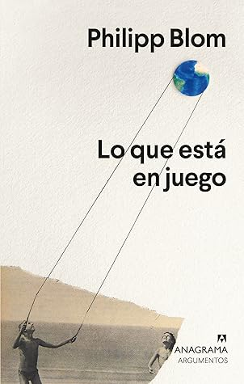

Lo que está en juego
Reseña por Jorge I. Zuluaga

Ver reseña en GoodReads (necesita cuenta)
En esta agria crítica de Blom no queda títere con cabeza: ni la democracia, ni la tiranía, ni la ilustración, ni el optimismo bobalicón, ni la ciencia, ni las ideologías consumistas. Nada. Y, no lo neguemos más: eso está bien. Para pensar en resolver realmente el quilombo en el que nos hemos metido, tenemos también que empezar por eliminar los "fueros" de los que han gozado incluso nuestras mejores ideas: democracia, ilustración, progreso, ciencia. Si queremos cambiar el mundo, nada puede quedar fuera del escepticismo.
Ultimamente me he aficionado a leer libros sobre la crisis climática y otras pestes del mundo presente. Esta afición esta motivada, en gran medida, por mi preocupación sincera por el futuro; pero también esta alimentada, debo confesar, en no menor proporción, por una cierta curiosidad morbosa por saber lo que piensan los grandes analistas, historiadores y científicos (hombres y mujeres) sobre lo que está pasando y lo que nos podría esperar en un futuro cada vez más cercano (futuro-presente deberíamos decir).
En los libros que he leído me he encontrado, de un lado, panoramas oscuros, un mundo futuro que parece sacado de una obra de ciencia ficción; del otro, y en contraposición, visiones relativamente optimistas.
Sin embargo, "Lo que está en juego" se sale de cualquier molde.
El libro presenta una reflexión amplia de la situación, no solo ambiental, sino también política, tecnológica, económica y social del mundo en el que vivimos; pero con una característica particular: casi nada parece ser bueno, todo parece estar en crisis.
No solo es pesimismo que nos advierte de la necesidad de tomar medidas pronto. Es pesimismo del tipo "la cagamos de verdad".
Si buscan una razón para perder la esperanza (o para reforzar las esperanzas, a veces es en las crisis en las que la humanidad se ha "crecido") tienen que leer las reflexiones de Blom: "los que quieran reflexionar sobre el futuro deberán tachar una frase de su vocabulario: eso no puede ocurrir nunca".
Para Blom, un historiador Alemán, en el centro de todo el problema esta (no es difícil adivinarlo) el capitalismo y el monstruo en el que se "materializa", el libre mercado: "Hace tiempo que el paraíso se ha convertido en mercado libre. Al que no tiene nada que vender se lo comen los perros"; "los mercados no necesitan una democracia y no son en absoluto garantes de los derechos o las prácticas democráticas".
En medio de sus páginas, que son, para alguien como yo al que le gusta coleccionas datos y frases, una fuente inagotable de "dinosaurios en un dedal", me encontré una descripción de una sociedad muy parecida al país en el que vivo: "Es probable que sin redistribución surja una clase baja indignada, y, con ella, tumultos, inseguridad creciente, una criminalidad disparada y unas relaciones sociales como hoy solo se conocen en sociedades en las que el Estado tiene poco poder de intervención, gobernadas de facto por narcotraficantes y otros delincuentes". ¿Estaba Blom pensando en Colombia?. Difícil dudarlo.
El libro contiene la que considero una joya de "historia contrafactual futura", un ejercicio de "¿que pasaría si...?" social de los que lamentablemente no se han escrito muchos más.
En el capítulo "No hay vuelta atrás", en una sección con un curioso nombre, "el hada de los dientes de leche de la historia", se dedica a reflexionar sobre el que considera es el único evento que podría tal vez salvar a la humanidad del colapso en ciernes. Un evento tan improbable como parece ser también que evitemos el desastre: que todos los humanos despertáramos un día (el mismo días) después de haber descubierto en sueños la realidad de la crisis, y a continuación nos pusiéramos a trabajar para conjurarla.
Los resultados del ejercicio son asombrosos (al menos a mí me lo parecieron) y las ideas que resultan son realmente originales. ¿Qué pasaría si el precio de los artículos de consumo empezará a "calcularse tomando como base los costes reales, desde la obtención de las materias primas hasta el reciclaje de los componentes y los costos para [la humanidad] y el entorno a lo largo de todo el ciclo"? ¿qué pasaría si "los costes del transporte [de alimentos] aumentan y los consumidores vuelven a comprar más productos locales, a intercambiarlos o a producirlos ellos mismos? ¿que pasaría si "se grava todo el rendimiento [incluyendo el de las máquinas que han desplazado a los humanos de sus puestos de trabajo]; cada ciudadano recibe una cantidad mensual que cubre sus necesidades básicas y le permite decidir libremente el modo en que quiere usar su energía y su tiempo"? ¿que pasa si "la moda retrocede y anuncia productos de nuevos materiales, energéticamente neutros, y prendas obtenidas sin explotar a los tranajadores (robots, en la mayor parte de los casos) [y donde] el verdadero lujo es todo lo que se hace a mano"? ¿que pasaría si cambian las formas de gobierno y "hay países en los que experimentan con asambleas ciudadanas; otros con sistemas más propios de la lotería; otros deciden celebrar minielecciones diarias en las redes sociales?
¿Pero es bueno ser pesimista en estos tiempos?. Sí y no. Se necesita el "pesimismo de la razón y el optimismo de la acción" porque "la esperanza tonta y el optimismo ingenuo han sido los sepultureros de muchas buenas ideas".
¡Lean a Blom ya!
Yo, mientras tanto, me quedo con mi afición (morbosa). Ya tengo otro par de libros sobre la crisis para leer. En el fondo espero que, leer libros como "Lo que está en juego" me lleve a tener más y mejor información para participar en decisiones futuras, pero si nada se puede hacer, al menos espero que estas lecturas me permitan saber por qué no se pudo.
“¿Qué está en juego? ¡Todo está en juego!”